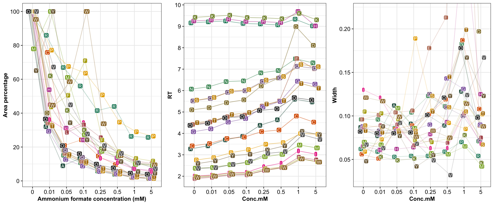
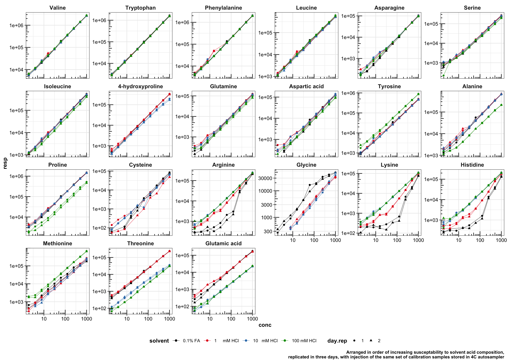
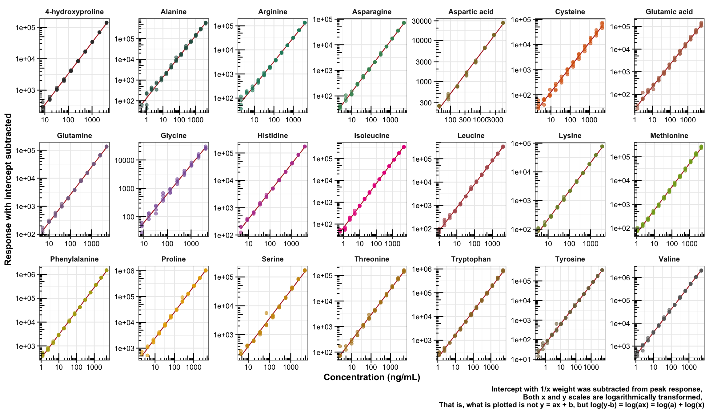
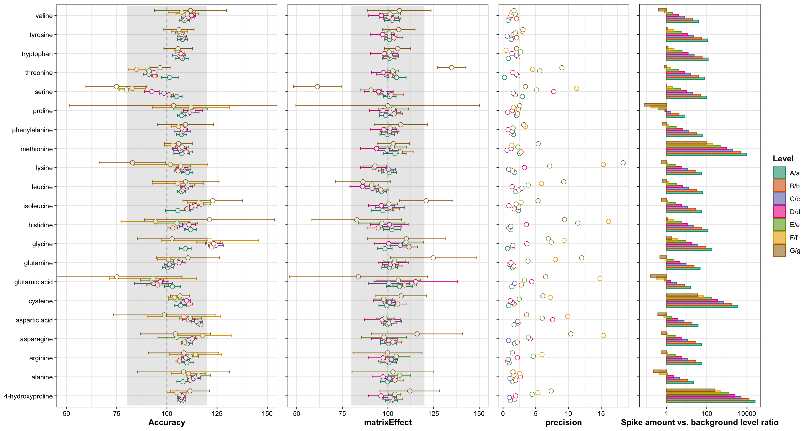
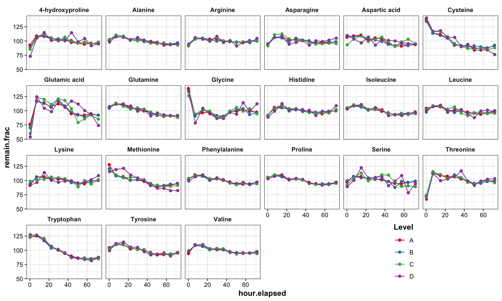

Method Development & Validation
Bo Yuan
12/10/2019
library(readxl)
library(RColorBrewer)
library(rebus)
library(gtools)
library(gridExtra)
library(cowplot)
library(ggrepel)
library(tidyverse)theme_set(theme_bw() +
theme(strip.background = element_blank(),
strip.text = element_text(face = "bold"),
title = element_text(colour = "black", face = "bold"),
axis.text = element_text(colour = "black")))# All data Excel
path = "/Users/Boyuan/Desktop/My publication/7th. HILIC amino acid & PCA/Publish-ready files/Method development and validation.xlsx"1 Method Development
1.1 Mobile phase buffer optimization
1.1.1 Retention time
## Read and tidy up data
df.buffer = read_excel(path, sheet = "mobile phase buffer") # mobile phase buffer optimization dataset
df.AA = read_excel(path, sheet = "amino acids") # amino acids traits dataset
df.buffer = df.buffer %>% left_join(df.AA, by = "Amino acids") # combine datasets
df.buffer$`Amino acids` %>% unique() # Check all amino acids are properly registered (ensure there is NO datasets mis-match)## [1] "Alanine" "Arginine"
## [3] "Asparagine" "Aspartic acid"
## [5] "Cysteine" "Glutamic acid"
## [7] "Glutamine" "Glycine"
## [9] "Histidine" "Isoleucine"
## [11] "Leucine" "Lysine"
## [13] "Methionine" "Phenylalanine"
## [15] "Proline" "Serine"
## [17] "Threonine" "trans-4-hydroxyproline"
## [19] "Tryptophan" "Tyrosine"
## [21] "Valine"df.buffer$Conc.mM = df.buffer$Conc.mM %>%
factor(levels = rev(unique(df.buffer$Conc.mM)), ordered = T) # convert buffer conc. into factors
## Plot RT over mobile phase buffer concentration
AA.colors = colorRampPalette(c("#333333", brewer.pal(8, "Dark2")))(21) # set up colors for all 21 amino acids, applied for all following amino acids color assignemnt
dodge.RT = 0.5 # data points random scatterness to avoid overlapping
plt.buffer.RT = df.buffer %>%
ggplot(aes(x = Conc.mM, y = RT, color = `Amino acids`, fill = `Amino acids`, group = `Amino acids`)) +
geom_line(alpha = 0.5, position = position_dodge(dodge.RT)) +
geom_label(aes(label = Abbrev.I),
label.padding = unit(0.1, "lines"), color = "white", size = 2.8,
position = position_dodge(dodge.RT)) +
scale_y_continuous(breaks = seq(2, 10, 1)) +
theme(axis.text = element_text(size = 10),
axis.title = element_text(size = 10),
legend.position = "None") +
# labs(x = "Ammonium formate concentration (mM)", y = "Retention time (min)",
# caption = "The column void time is 1 min. \nRetention factor could be calculated accordingly. \nSample solvent was 50:50 ACN:H2O") +
scale_color_manual(values = AA.colors) +
scale_fill_manual(values = AA.colors)
# plt.buffer.RT1.1.2 Peak width
## Plot peak width over mobile phase buffer concentration
dodge.width = 0.4
plt.buffer.width = df.buffer %>%
ggplot(aes(x = Conc.mM, y = Width, color = `Amino acids`, fill = `Amino acids`, group = `Amino acids`)) +
geom_line(alpha = 0.2, position = position_dodge(dodge.width)) +
geom_label(aes(label = Abbrev.I), label.padding = unit(0.08, "lines"),
color = "white", position = position_dodge(dodge.width), size = 2.8) +
theme(axis.text = element_text(size = 10),
axis.title = element_text(size = 10),
legend.position = "None") +
scale_color_manual(values = AA.colors) +
scale_fill_manual(values = AA.colors) +
coord_cartesian(ylim = c(0.028, 0.22))
# labs(x = "Ammonium formate concentration (mM)",
# y = "Peak width at half maximum (min)",
# caption = "The column void time is 1 min. \nRetention factor could be calculated accordingly. \nSample solvent was 50:50 ACN:H2O")
# plt.buffer.width1.1.3 Peak area
## Plot peak area over mobile phase buffer concentration
dodge.area.perc = 0.5
df.buffer = df.buffer %>% group_by(`Amino acids`) %>%
mutate(Area.percent = Area/max(Area)*100) # normalize to percent of maximum for each amino acids
plt.buffer.area = df.buffer %>%
ggplot(aes(x = Conc.mM, y = Area.percent, fill = `Amino acids`, color = `Amino acids`, group = `Amino acids`)) +
geom_line(alpha = 0.3, position = position_dodge(dodge.area.perc)) +
geom_label(aes(label = Abbrev.I),
label.padding = unit(0.1, "lines"), color = "white", size = 2.8,
position = position_dodge(dodge.RT)) +
scale_y_continuous(breaks = seq(0, 100, 20)) +
theme(axis.text = element_text(size = 10),
axis.title = element_text(size = 10),
legend.position = "None") +
scale_color_manual(values = AA.colors) +
scale_fill_manual(values = AA.colors) +
labs(x = "Ammonium formate concentration (mM)", y = "Area percentage")
# scale_y_log10() + annotation_logticks(sides = "l")
# plt.buffer.area1.1.4 Combine RT + width + response
## Plot Area & RT & Width together
grid.arrange(plt.buffer.area, plt.buffer.RT, plt.buffer.width, nrow = 1)
1.1.5 Resolution of Leu vs. Ile
## Plot resolution of leucine vs. Isoleucine
df.buffer %>% filter(`Amino acids` == "Isoleucine") %>%
mutate(Resolution = as.numeric(Resolution)) %>%
ggplot(aes(x = Conc.mM, y = Resolution, group = `Amino acids`)) +
geom_bar(stat = "identity") +
geom_line() + geom_point()1.2 Sample solvent acidifier optimization
1.2.1 Response linearity
## Read data and tidy up
df.acid.resp = read_excel(path, sheet = "sample solvent acid_response") # read Exel sheet
df.acid.resp = df.acid.resp %>% gather(-c(solvent, sample), key = compound, value = resp) # gather compounds
df.acid.resp = df.acid.resp[complete.cases(df.acid.resp), ] # remove missing value rows
df.resp.zero = df.acid.resp %>% filter(resp == 0) # mark out resp = 0 rows for deletion in sheet "sample solvent acid_RT" to be analyzed later
df.acid.resp = df.acid.resp %>%
mutate(conc.level =
df.acid.resp$sample %>% str_extract(pattern = "-" %R% one_or_more(DGT)) %>%
str_extract(one_or_more(DGT)) %>% as.integer(), # extract concentration level
conc = 1000 / 2 ^ (conc.level - 1), # set up concentration
day.rep = df.acid.resp$sample %>% str_extract(pattern = or("2nd", "3rd")) %>%
str_extract(DIGIT) %>% na.replace("1") %>% as.character()) %>% # extract day replicate
select(-sample) %>% # remove now useless column
filter(resp > 0) # remove undetected entries (shifted outside dMRM time window due to solvent effect; low level of concentration)## Arrange compounds in order of response susceptability to solvent acid composition
df.acid.susceptibility = df.acid.resp %>%
group_by(compound, conc.level) %>%
summarise(resp.var.level.sol = sd(resp)/mean(resp) ) %>%
group_by(compound) %>%
summarise(resp.var.sol = mean(resp.var.level.sol)) %>%
arrange(resp.var.sol)
cmpd.ordered.smpl.acid.susceptable = df.acid.susceptibility$compound## Plot peak area vs. different acid composition for ALL compounds
acid.color = c("black", brewer.pal(9, "Set1")[ c(1:2) ], "#009900") # black, (red, blue, from package), and dark green
plt.acid.response.all.compounds = df.acid.resp %>%
mutate(compound = factor(compound, levels = cmpd.ordered.smpl.acid.susceptable, ordered = T)) %>%
filter(day.rep != 3) %>% # remove 3rd day replicate as data is not complete over all calibration range
ggplot(aes(x = conc, y = resp, shape = day.rep, color = solvent)) +
geom_line(size = .2) +
geom_point() +
facet_wrap(~compound, scales = "free_y", nrow = 4) +
theme(legend.position = "bottom", strip.text = element_text( size = 11),
axis.text = element_text(color = "black", size = 10)) +
scale_shape_manual(values = c(16, 17, 18)) +
scale_x_log10() + scale_y_log10() + annotation_logticks() +
scale_color_manual( values = acid.color ) +
labs(caption = "Arranged in order of increasing susceptability to solvent acid composition,
replicated in three days, with injection of the same set of calibration samples stored in 4C autosampler")
plt.acid.response.all.compounds
## Plot peak area vs. different acid composition for representative compounds (of different susceptability)
acid.cmpd.selected = factor(
c("Histidine", "Lysine", "Arginine", "Tyrosine", "Methionine", "Glutamic acid", "Threonine", "Proline", "Alanine"),
ordered = T)
plt.acid.response.selected.compounds = df.acid.resp %>%
filter(compound %in% acid.cmpd.selected) %>%
mutate(compound = factor(compound, levels = acid.cmpd.selected, ordered = T)) %>%
filter(day.rep != 3) %>% # remove 3rd day replicate as data is not complete over all calibration range
ggplot(aes(x = conc, y = resp, shape = day.rep, color = solvent)) +
geom_line(size = .2) +
geom_point() +
facet_wrap(~compound, scales = "free_y", nrow = 3) +
theme(strip.text = element_text(size = 10.5),
axis.text = element_text(size = 11)) +
scale_shape_manual(values = c(16, 17, 18)) +
scale_x_log10() + scale_y_log10() + annotation_logticks() +
scale_color_manual( values = acid.color ) +
labs(caption = "Replicated in three days (4 °C),
with injection of the same set of calibration samples",
title = "Response linearity with different acidifier in sample solvent")
# plt.acid.response.selected.compoundsTo faciliate visualization and examination, the calibration is logarithmically transformed. As y = ax + b, b is usually small and negligible, the calibration may be re-written as logy = log(ax) = loga + logx, i.e., the transformed results remain linearity, with the intercept loga reflecting sensiviity.
1.2.2 Retention time shift
## Read data and tidy up
df.acid.RT = read_excel(path, sheet = "sample solvent acid_RT")
df.acid.RT = df.acid.RT %>% gather(-c(solvent, sample), key = compound, value = RT)
df.acid.RT = anti_join(df.acid.RT, df.resp.zero, by=c("sample", "compound")) # remove response = zero rows (from prior response dataset)
## RT stats summary
df.acid.RT.summary = df.acid.RT %>%
group_by(compound, solvent) %>%
summarise(RT.mean = mean(RT), RT.std = sd(RT)) %>%
arrange(RT.mean)
df.acid.RT.FA = df.acid.RT.summary %>%
filter(solvent == "0.1% FA") %>%
rename(RT.FA.mean = RT.mean, RT.FA.std = RT.std) %>%
select(-solvent) # 0.1% FA RT as comparison reference
df.acid.RT.summary = df.acid.RT.summary %>%
left_join(df.acid.RT.FA, by = c("compound"))
## RT difference relative to 0.1% FA
df.acid.RT.diff = df.acid.RT.summary %>%
mutate(RT.diff.mean = RT.mean - RT.FA.mean,
RT.diff.std = sqrt(RT.std^2 + RT.FA.std^2)) %>% # var(X + Y) = var(X) + var(Y), X and Y independent
filter(solvent != "0.1% FA")
## Order sequence in RT diff
cmpd.ordered.acid.RT.diff = (
df.acid.RT.diff %>%
group_by(compound) %>%
summarise(overal.diff = mean(RT.diff.mean)) %>%
arrange(overal.diff))$compound## Plot RT difference using different sample acids relative to using 0.1% FA
plt.acid.RT.diff = df.acid.RT.diff %>%
ungroup() %>%
mutate(compound = factor(compound, levels = cmpd.ordered.acid.RT.diff, ordered = T)) %>%
ggplot(aes(x = compound, y = RT.diff.mean, fill = solvent, color = solvent)) +
geom_bar(stat = "identity", position = position_dodge(.5), alpha = .6, color = NA) +
coord_flip() +
geom_errorbar(aes(ymin = RT.diff.mean - RT.diff.std, ymax = RT.diff.mean + RT.diff.std),
width = .5, position = position_dodge(.5)) +
theme(axis.text = element_text(size = 10)) +
scale_y_reverse() +
scale_fill_manual(values = acid.color[-1]) +
scale_color_manual(values = acid.color[-1])
# plt.acid.RT.diff1.2.3 Combine RT + width + response
## Plot combined response curve and RT shift
plot_grid(plt.acid.response.selected.compounds + theme(legend.position = "bottom"),
plt.acid.RT.diff + theme(legend.position = "bottom"),
nrow = 1, rel_widths = c(.6, .35)) # 16.7 X 8.3For plot on the right, some compounds shifted outside dMRM detection range at 100 mM HCl, and thus the RT not reported.
2 Method Validation
2.1 Calibration curve
2.1.1 Residual analysis
For residual analysis, we use the concept of “calibration accuracy”, which is defined as the back-calculated concentration based on constructed calibration divided by expected concentration.
#### PART I: CALIBRATION RESIDUAL ANALYSIS (CALIBRATION ACCURACY)
## Import data and tidy up
# Dataset of concentration for each level of each amino acid
df.cal.conc = read_excel(path, sheet = "Calibration conc. ng.mL-1", range = "A1:W61")
df.cal.conc.tidy = df.cal.conc %>%
gather(-c(`sample name`, level), key = compounds, value = exp.content.ng.perML)
# Dataset of lowest level of calibration
df.cal.lowestLevel = read_excel(path, sheet = "Calibration conc. ng.mL-1", range = "C64:W65")
df.cal.lowestLevel.tidy = df.cal.lowestLevel %>% gather(key = compounds, value = lowestLevel)
# Dataset of calibration accuracy for each amino acid at each level
df.cal.accuracy = read_excel(path, sheet = "Calibration_accuracy")
df.cal.accuracy.tidy = df.cal.accuracy %>%
gather(-c(`sample name`, `file name`, level), key = compounds, value = accuracy) %>%
filter(accuracy >0) # remove accuracy = 0 rows (manually zeroed peak areas for calibrator points not included in the calibration range)
## Dataset of calibration response
df.cal.resp = read_excel(path, sheet = "Calibration_response")
df.cal.resp.tidy = df.cal.resp %>%
gather(-c(`sample name`, `file name`, level), key = compounds, value = resp) %>%
filter(resp > 0) # remove area = 0 rows (manually zeroed peak areas for calibrator points not included in the calibration range)
# augment with actual expected concentration and response
df.cal.accuracy.tidy = df.cal.accuracy.tidy %>%
left_join(df.cal.conc.tidy, by = c("compounds", "level", "sample name")) %>%
left_join(df.cal.resp.tidy, by = c("sample name", "file name", "compounds", "level"))# Statistical analysis and visualizaiton
# Calibration accuracy visualization
plt.cal.accuracy = df.cal.accuracy.tidy %>%
ggplot(aes(x = exp.content.ng.perML, y = accuracy, color = compounds)) +
geom_segment(aes(x = 0, xend = df.cal.accuracy.tidy$exp.content.ng.perML %>% max(),
y = 100, yend = 100),
linetype = "dashed", size = .2, color = "black") +
annotate(geom = "rect", xmin = 0, xmax = df.cal.accuracy.tidy$exp.content.ng.perML %>% max(),
ymin = 90, ymax = 110, fill = "dark green", alpha = .1) +
geom_point(size = .5, alpha = .8) +
scale_x_log10() +
annotation_logticks(sides = "b") +
scale_y_continuous(limits = c(0, 200), breaks = seq(0, 200, 20)) +
theme(legend.position = "None", title = element_text(face = "bold")) +
ggtitle("Calibration accuracy") +
scale_color_manual(values = AA.colors)
# plt.cal.accuracy2.1.2 Dilution error based on residual analysis
df.dilutionError = df.cal.accuracy.tidy %>%
group_by(compounds, level) %>%
mutate(error.percent = abs((resp - mean(resp)) / mean(resp)) * 100) %>% # normalize as percent relative to the mean at each level
summarise(error.percent.mean = mean(error.percent)) %>% # normalized response variance
ungroup() %>%
mutate(level = as.numeric(level),
level.max = max(level),
dilutionSteps = level.max -level) # all levels uniformly converted to number of dilution steps
plt.dilutionError = df.dilutionError %>%
ggplot(aes(x = dilutionSteps, y = error.percent.mean, color = compounds)) +
geom_smooth(method = "lm", se = F, aes(group = 1), color = "black",
size = 5, alpha = .05) +
geom_smooth(method = "lm", se = F, aes(group = compounds)) +
geom_point() + geom_line(alpha = .2) +
scale_color_manual(values = AA.colors) +
scale_y_log10() + annotation_logticks(side = "l") +
theme(legend.position = "NA") +
labs(title = "Error propogation in calibration dilution steps",
y = "Error percent", x = "Dilution steps form stock solution (step 0)") +
# add amino acid label
geom_text(data = df.dilutionError %>% filter(dilutionSteps ==0),
aes(x = -0.5, label = compounds), size = 3)
# plt.dilutionErrorStepError = lm(error.percent.mean ~ dilutionSteps, data = df.dilutionError) %>%
summary()
StepError##
## Call:
## lm(formula = error.percent.mean ~ dilutionSteps, data = df.dilutionError)
##
## Residuals:
## Min 1Q Median 3Q Max
## -9.990 -3.417 -1.757 1.511 34.033
##
## Coefficients:
## Estimate Std. Error t value Pr(>|t|)
## (Intercept) 3.1999 0.6712 4.767 3.17e-06 ***
## dilutionSteps 0.5224 0.1003 5.208 3.97e-07 ***
## ---
## Signif. codes: 0 '***' 0.001 '**' 0.01 '*' 0.05 '.' 0.1 ' ' 1
##
## Residual standard error: 5.787 on 251 degrees of freedom
## Multiple R-squared: 0.09753, Adjusted R-squared: 0.09394
## F-statistic: 27.13 on 1 and 251 DF, p-value: 3.973e-072.1.3 Combine residual + dilution error pattern
plot_grid(plt.cal.accuracy, plt.dilutionError, nrow = 1, align = "h")In plot on the left: The calibration accuracy is defined as (the back-calculated concentration based on measured peak area and constructed calibration) divided by (expected concentration). Each different color represents one amino acids (color legend not shown), and each amino acid presents two to four (mostly four; significant outliers manually removed) calibrators at each concentration level. For most compounds at majority of levels and most calibrators fall within the ideal 90~110 calibration accuracy range.
At more diluted level, the accuracy fanned out, because: 1) at low conc. the peak area is more susceptabile to integration inconsistency; 2) perhaps more importantly, as four sets of calibration from the same stock solution were separately prepared, more diluted calibrators presented accumulated error incremented along multiple dilution steps. This effect is demonstrated in the following plot.
In plot on the right: Each different color represents one amino acid, with cooresponding label on the left side of the plot. For each amino acids, the absolute error percent at adjacent levels are connected with faint colored line, and the trend of change in the absolute error percent is approximated using simple linear regression. While the intercept and slope differ for varied amino acids, due to their different chromatographic or mass spectrometric performance, the change in error percent generally follows up an increasing linear trend, approximated by the thick black regression line, which roughly reflects the rate of error accumulation at each dilution step. In this case, it is 0.52%.
The intercept reflects the averaged absolute error percentage measured at the first calibrator, which following calibrators are diluted from. Certain compounds, such as cysteine and glutamic acid has rather high error percentage, due to their degradation occuring between the injections (the injection of each calibrator of the same concentration level was evenly spaced across a total sequence time of 60 hours)
2.1.4 Linearity visualization
# import calibration intercept dataset (with 1/x weight)
df.cal.intercept = read_excel(path, sheet = "Calibration_intercept")
# augment calibration dataset with cal curve intercept with 1/x weighe
df.cal.accuracy.tidy = df.cal.accuracy.tidy %>%
left_join(df.cal.intercept, by = "compounds") %>%
# y = ax + b convert to y-b = ax, for visualization purpose
mutate(resp.subtractIntercept = resp - `intercept.1/x.weight`)
# plot
plt.calibrationCurve = df.cal.accuracy.tidy %>%
ggplot(aes(x = exp.content.ng.perML, y = resp.subtractIntercept, color = compounds)) +
geom_smooth(method = "lm", se = F, size = .5, color = "firebrick") +
geom_point(alpha = .6) +
facet_wrap(~compounds, scales = "free", nrow = 3) +
scale_x_log10() + scale_y_log10() + annotation_logticks() +
labs(caption = "Each level composed of 2~4 calibrators") +
scale_color_manual(values = AA.colors) +
labs(x = "Concentration (ng/mL)", y = "Response with intercept subtracted",
caption = "Intercept with 1/x weight was subtracted from peak response,
Both x and y scales are logarithmically transformed,
That is, what is plotted is not y = ax + b, but log(y-b) = log(ax) = log(a) + log(x)") +
theme(legend.position = "NA")
plt.calibrationCurve
For calibration function, y-b = ax, which is re-written as log (y - b) = log a + log x. Recall that in the previous plot of solvent impact, the intercept b term was ignored; in this case, however, ignoring the b term caused curvature at low level of concentration.
2.2 Accuracy and matrix effects
2.2.1 Accuracy
# measured injecton concentration
df.inj.conc = read_excel(path, sheet = "validation injection conc.", range = "A1:X90")
# Remove a few significantly bad-performing samples after manual check
df.inj.conc = df.inj.conc %>% filter(!Sample %in% c("Accuracy_F_r3.d", "matrix effect_f_r2", "matrix effect_g_r1"))
# standard stock concentration
df.stock.conc = read_excel(path, sheet = "validation spike amount", range = "A1:B22")
# standard stock spike volume
df.spk.volume = read_excel(path, sheet = "validation spike amount", range = "A25:B32")
# Compute background.
# Note the concentration, ng/mL, track back to original extract, i.e., before 100-fold dilution
df.background = df.inj.conc %>% filter(Purpose == "Background") %>%
select(-c(Purpose, Sample, Level)) %>%
gather(key = compounds, value = background) %>%
group_by(compounds) %>%
summarise(
# background / background content mean level and dispersion
background.mean = mean(background * 100),
background.sd = sd(background * 100))
# injection concentration associated with accuracy computation
df.inj.conc.accuracy = df.inj.conc %>% filter(Purpose == "Accuracy") %>%
gather(-c(Purpose, Sample, Level), key = compounds, value = conc.inj)
# df.inj.conc.accuracy# Compute stats of the quality control sample (QC) spiked with standards
# Compute final concentration expected, and expected deviation from background
df.QC = (x = df.inj.conc.accuracy %>% select(Level, compounds))[!duplicated(x), ] %>% # compound-level combination
left_join(df.spk.volume, by = "Level") %>% # spike volume for different levels
mutate(plantExtractVol.uL = 800, # plant extract volume
# dilute factor after spiking
SpikeDiluteFactor = (plantExtractVol.uL + SpikeVol.uL)/SpikeVol.uL,
BackgroundDiluteFactor = (plantExtractVol.uL + SpikeVol.uL)/plantExtractVol.uL) %>%
left_join(df.background, by = "compounds") %>%
left_join(df.stock.conc, by = "compounds") %>%
mutate(
# the following three lines are the component-wise concentration with correction of dilution effect of spiking
# the concentration is that of QC, prior to 100-fold dilution;
# all three conc. marked as "QC", vs. the original plant extract marked as "background"
QC.background.mean = background.mean / BackgroundDiluteFactor,
QC.background.sd = background.sd/BackgroundDiluteFactor, # the original background deviation shrinks after spike-induced dilution
# spiked amount
QC.Spike.Expected = `Stock.conc.ug/mL` / SpikeDiluteFactor * 1000) # converting concentration to ng/mL
# compute expected component-wise concentration at injection
df.inj.conc.expected = df.QC %>%
# remove some redundant columns
select(-contains("Vol.uL")) %>% # remove spike and plant extract volume columns
select(-c(background.mean, background.sd)) %>% # remove original plant extract mean and deviation (prior to spike)
# all three concentration marked as "inj", after 100-fold dilution
mutate(inj.conc.background.mean = QC.background.mean / 100,
inj.conc.background.sd = QC.background.sd / 100,
inj.conc.Spike.Expected = QC.Spike.Expected / 100)
# df.inj.conc.expected# compute measured concentration at injection
df.accuracy = df.inj.conc.accuracy %>%
group_by(compounds, Level) %>%
summarise(conc.inj.mean = mean(conc.inj),
conc.inj.sd = sd(conc.inj)) %>%
# combine the expected level
left_join(df.inj.conc.expected, by = c("compounds", "Level")) %>%
# compute stats summary
mutate(Accuracy = (conc.inj.mean - inj.conc.background.mean) / inj.conc.Spike.Expected * 100,
Accuracy.sd = sqrt(conc.inj.sd^2 + inj.conc.background.sd^2) / inj.conc.Spike.Expected * 100 )
df.accuracy## # A tibble: 147 x 15
## # Groups: compounds [21]
## compounds Level conc.inj.mean conc.inj.sd SpikeDiluteFact…
## <chr> <chr> <dbl> <dbl> <dbl>
## 1 alanine A/a 2189. 59.7 1.8
## 2 alanine B/b 1625. 20.2 2.6
## 3 alanine C/c 952. 21.9 5
## 4 alanine D/d 621. 7.28 9
## 5 alanine E/e 424. 10.7 17
## 6 alanine F/f 287. 3.98 41
## 7 alanine G/g 242. 7.79 81
## 8 arginine A/a 1590. 50.4 1.8
## 9 arginine B/b 1082. 16.8 2.6
## 10 arginine C/c 601. 13.4 5
## # … with 137 more rows, and 10 more variables:
## # BackgroundDiluteFactor <dbl>, `Stock.conc.ug/mL` <dbl>,
## # QC.background.mean <dbl>, QC.background.sd <dbl>,
## # QC.Spike.Expected <dbl>, inj.conc.background.mean <dbl>,
## # inj.conc.background.sd <dbl>, inj.conc.Spike.Expected <dbl>,
## # Accuracy <dbl>, Accuracy.sd <dbl># Visualize accuracy
dg.Acc = .6 # position_dodge value
errorBarWidth = 1
plt.accuracy = df.accuracy %>% ggplot(aes(x = compounds, y = Accuracy, color = Level)) +
geom_errorbar(aes(ymin = Accuracy - Accuracy.sd,
ymax = Accuracy + Accuracy.sd),
width = errorBarWidth, position = position_dodge(dg.Acc)) +
geom_point(shape = 21, size = 2.5, fill = "white", position = position_dodge(dg.Acc)) +
coord_flip(ylim = c(50, 150)) +
annotate("rect", xmin = .5, xmax = 21.5, ymin = 80, ymax = 120, alpha = .1, fill = "black") +
annotate("segment", x = .5, xend = 21.5, y = 100, yend = 100, linetype = "dashed", size = .4) +
scale_color_brewer(palette = "Dark2")
# plt.accuracy2.2.2 Spike level vs. background
# spike amount vs. background level
plt.spike.background = df.accuracy %>%
mutate(spike.vs.background = inj.conc.Spike.Expected / inj.conc.background.mean) %>%
ggplot(aes(x = spike.vs.background, y = compounds, color = Level)) +
geom_point(shape = 21, size = 2.5, stroke = 1) +
scale_x_log10() + annotation_logticks(side = "b") +
scale_color_brewer(palette = "Dark2")
plt.spike.background
# Accuracy variance vs. (spike amount vs. background) scatter plot
`plt.AccuracyVariance.vs.(spike vs background).scatter` =
df.accuracy %>%
ggplot(aes(x = inj.conc.Spike.Expected / inj.conc.background.mean,
y = Accuracy.sd, color = Level)) +
geom_point(shape = 21, size = 2.5, stroke = 1) +
scale_x_log10() + scale_y_log10() + annotation_logticks() +
scale_color_brewer(palette = "Dark2") +
# accuracy standard deviation line: 10%
geom_segment(aes(x = .1, xend = 30000, y = 20, yend = 20), linetype = "dashed", color = "black", size = .1) +
# 50% spike amount vs background ratio
geom_segment(aes(x = .5, xend = .5, y = .1, yend = 110), linetype = "dashed", color = "black", size = .1) +
theme(legend.position = c(.8, .75), panel.grid = element_blank()) +
geom_text_repel(data = df.accuracy %>% filter(Accuracy.sd > 20),
aes(label = compounds))
# `plt.AccuracyVariance.vs.(spike vs background).scatter`# Accuracy variance vs. (spike amount vs. background) bar plot
`plt.AccuracyVariance.vs.(spike vs background).barplot` =
df.accuracy %>%
ggplot(aes(x = compounds,
y = inj.conc.Spike.Expected / inj.conc.background.mean,
fill = Level, color = Level)) +
geom_bar(stat = "identity", position = position_dodge(.7), alpha = .6) +
scale_color_brewer(palette = "Dark2") +
scale_fill_brewer(palette = "Dark2") +
scale_y_log10() + coord_flip() +
labs(y = "Spike amount vs. background level ratio")
# `plt.AccuracyVariance.vs.(spike vs background).barplot`grid.arrange(`plt.AccuracyVariance.vs.(spike vs background).scatter`,
`plt.AccuracyVariance.vs.(spike vs background).barplot`,
nrow = 1)# Blank measurement contribution to accuracy deviation
plt.accuracy.variance.decomposition = df.accuracy %>%
select(compounds, Level, inj.conc.background.sd, conc.inj.sd) %>%
gather(-c(1:2), key = sd.source, value = sd) %>%
mutate(sd.squared = sd^2) %>%
ggplot(aes(x = compounds, y = sd.squared, fill = sd.source)) +
geom_bar(stat = "identity", position = "fill") +
facet_wrap(~Level, nrow = 1) + coord_flip() +
theme(legend.position = "bottom",
axis.text.x = element_text(angle = 45, vjust = .7),
axis.title.x = element_blank()) +
labs(title = "Accuracy variance partition into background and spiked QC sample")
plt.accuracy.variance.decompositionAt lower spike levels, the measurement variance of the background content contributes increasingly more to the overal accuracy dispersability, and quantification of a small spike amount into a high-level background could be easily interferenced by the background measurement volatility and thus rendered more challenging.
2.2.3 Matrix effects
# Matrix effect
df.matrix = df.inj.conc %>% filter(Purpose == "Matrix effect") %>%
gather(-c(Purpose, Sample, Level), key = compounds, value = matrix.conc) %>%
group_by(compounds, Level) %>%
summarise(matrix.conc.mean = mean(matrix.conc),
matrix.conc.sd = sd(matrix.conc))
df.matrix ## # A tibble: 147 x 4
## # Groups: compounds [21]
## compounds Level matrix.conc.mean matrix.conc.sd
## <chr> <chr> <dbl> <dbl>
## 1 alanine A/a 2107. 57.9
## 2 alanine B/b 1449. 60.6
## 3 alanine C/c 787. 28.1
## 4 alanine D/d 458. 26.9
## 5 alanine E/e 224. 5.44
## 6 alanine F/f 61.0 25.1
## 7 alanine G/g 45.5 2.41
## 8 arginine A/a 1558. 44.4
## 9 arginine B/b 1052. 46.9
## 10 arginine C/c 546. 11.8
## # … with 137 more rowsdf.matrix = df.accuracy %>%
select(-contains("QC")) %>% # remove QC stats columns to reduce cumbersomeness...
left_join(df.matrix, by = c("compounds", "Level")) %>%
mutate(matrixEffect = (conc.inj.mean - inj.conc.background.mean) / matrix.conc.mean * 100,
matrixEffect.sd =
# use error propogation rule, refer to https://chem.libretexts.org/Courses/Lakehead_University/Analytical_I/4%3A_Evaluating_Analytical_Data/4.03%3A_Propagation_of_Uncertainty
sqrt((conc.inj.sd^2 + inj.conc.background.sd^2) / (conc.inj.mean - inj.conc.background.mean)^2 +
(matrix.conc.sd / matrix.conc.mean)^2 ) * matrixEffect )
plt.matrixEffect = df.matrix %>%
ggplot(aes(x = compounds, y = matrixEffect, color = Level)) +
geom_errorbar(aes(ymin = matrixEffect - matrixEffect.sd,
ymax = matrixEffect + matrixEffect.sd),
width = errorBarWidth, position = position_dodge(dg.Acc)) +
geom_point(shape = 21, size = 2.5, fill = "white", position = position_dodge(dg.Acc)) +
coord_flip(ylim = c(50, 150)) +
annotate("rect", xmin = .5, xmax = 21.5, ymin = 80, ymax = 120, alpha = .1, fill = "black") +
annotate("segment", x = .5, xend = 21.5, y = 100, yend = 100, linetype = "dashed", size = .4) +
scale_color_brewer(palette = "Dark2")
# plt.matrixEffect2.2.4 Precision
# Precision
df.precision = df.inj.conc %>% filter(Purpose == "Precision") %>%
gather(-c(Purpose, Sample, Level), key = compounds, value = precision.conc) %>%
group_by(compounds, Level) %>%
summarise(precision.conc.mean = mean(precision.conc),
precision.conc.sd = sd(precision.conc),
precision = precision.conc.sd / precision.conc.mean * 100)
df.precision ## # A tibble: 147 x 5
## # Groups: compounds [21]
## compounds Level precision.conc.mean precision.conc.sd precision
## <chr> <chr> <dbl> <dbl> <dbl>
## 1 alanine A/a 2081. 30.1 1.45
## 2 alanine B/b 1511. 29.2 1.93
## 3 alanine C/c 740. 7.77 1.05
## 4 alanine D/d 394. 10.5 2.66
## 5 alanine E/e 214. 3.57 1.66
## 6 alanine F/f 89.4 2.27 2.54
## 7 alanine G/g 43.0 0.654 1.52
## 8 arginine A/a 1534. 14.2 0.926
## 9 arginine B/b 1116. 7.68 0.689
## 10 arginine C/c 533. 4.22 0.791
## # … with 137 more rowsplt.precision = df.precision %>% ggplot(aes(x = compounds, y = precision, color = Level)) +
geom_point(shape = 21, size = 2.5, fill = "white", position = position_dodge(dg.Acc)) +
coord_flip() +
scale_color_brewer(palette = "Dark2")2.2.5 Combine accuracy + matrix effects + precision
# Combine accuracy, matrix effect, and precision
plot_grid(
plt.accuracy + theme(legend.position = "NA", axis.title.y = element_blank()),
plt.matrixEffect + theme(
legend.position = "NA", axis.title.y = element_blank(), axis.text.y = element_blank()),
plt.precision + theme(
legend.position = "NA", axis.title.y = element_blank(), axis.text.y = element_blank()),
`plt.AccuracyVariance.vs.(spike vs background).barplot` + theme(
axis.title.y = element_blank(), axis.text.y = element_blank()),
nrow = 1, rel_widths = c(4, 3, 2, 2.5))
2.2.6 Summary table for key validation results
# clean up table for publication in supplementary material
df.accuracy.reportTable = df.accuracy %>% select(compounds, Level, Accuracy, Accuracy.sd) %>%
mutate(Accuracy.all = paste(round(Accuracy, 1), "±", round(Accuracy.sd, 1))) %>%
select(-c(Accuracy, Accuracy.sd)) %>% spread(Level, Accuracy.all)
df.accuracy.reportTable## # A tibble: 21 x 8
## # Groups: compounds [21]
## compounds `A/a` `B/b` `C/c` `D/d` `E/e` `F/f` `G/g`
## <chr> <chr> <chr> <chr> <chr> <chr> <chr> <chr>
## 1 alanine 108.1 ±… 111.7 ±… 113.4 … 114.6 … 115.8 ±… 110.7 ±… 108.3 ±…
## 2 arginine 109.9 ±… 106.2 ±… 108.4 … 109.4 … 111.6 ±… 114.3 ±… 108.4 ±…
## 3 asparagine 110.1 ±… 108.8 ±… 111 ± … 112.6 … 104.9 ±… 117.8 ±… 104.3 ±…
## 4 aspartic a… 116.9 ±… 115.6 ±… 114.9 … 110.7 … 111.6 ±… 108.4 ±… 98.7 ± …
## 5 cysteine 106.8 ±… 110.9 ±… 108.5 … 109.8 … 104.6 ±… 103.8 ±… 106.5 ±…
## 6 glutamic a… 102.8 ±… 95.3 ± … 93.3 ±… 96.7 ±… 92.6 ± … 93.1 ± … 75 ± 32…
## 7 glutamine 100.4 ±… 101.4 ±… 101.3 … 106.1 … 104.4 ±… 100.7 ±… 110.5 ±…
## 8 glycine 109.1 ±… 122.3 ±… 124.4 … 123.3 … 120.9 ±… 121.5 ±… 102.6 ±…
## 9 histidine 111.8 ±… 102.9 ±… 109.1 … 111 ± … 105.1 ±… 94.3 ± … 121.2 ±…
## 10 isoleucine 105.4 ±… 110.2 ±… 112.4 … 114.1 … 117.2 ±… 115.9 ±… 122.8 ±…
## # … with 11 more rowsdf.matirx.reportTable = df.matrix %>% select(compounds, Level, matrixEffect, matrixEffect.sd) %>%
mutate(matrixEffect = paste(round(matrixEffect, 1), "±", round(matrixEffect.sd, 1))) %>%
select(-matrixEffect.sd) %>% spread(Level, matrixEffect)
df.matirx.reportTable ## # A tibble: 21 x 8
## # Groups: compounds [21]
## compounds `A/a` `B/b` `C/c` `D/d` `E/e` `F/f` `G/g`
## <chr> <chr> <chr> <chr> <chr> <chr> <chr> <chr>
## 1 alanine 99.7 ± … 103.8 ±… 100.9 ±… 97.4 ± … 106.4 ±… 155 ± … 102.7 …
## 2 arginine 100.4 ±… 99.6 ± … 101.9 ±… 97.4 ± … 104.6 ±… 126.8 … 99.8 ±…
## 3 asparagine 100.2 ±… 102.7 ±… 100.4 ±… 98 ± 7 97.8 ± … 111.7 … 116 ± …
## 4 aspartic a… 99.7 ± … 100.7 ±… 102.7 ±… 96.9 ± … 98.5 ± 5 104.8 … 101.2 …
## 5 cysteine 99.3 ± … 105.4 ±… 100.8 ±… 98 ± 5.8 97.6 ± … 139 ± … 107.3 …
## 6 glutamic a… 106.4 ±… 109.2 ±… 100.5 ±… 115.2 ±… 105.7 ±… 142.9 … 83.8 ±…
## 7 glutamine 100.9 ±… 102.9 ±… 101.4 ±… 103.3 ±… 103.6 ±… 120.9 … 124.8 …
## 8 glycine 98.3 ± … 111.6 ±… 106.8 ±… 100.4 ±… 109.9 ±… 130.1 … 110.1 …
## 9 histidine 102.2 ±… 94.7 ± … 102.1 ±… 100.8 ±… 96.6 ± … 126 ± … 82.9 ±…
## 10 isoleucine 97.2 ± … 101.3 ±… 101.1 ±… 96.4 ± 7 100.5 ±… 152.8 … 121 ± …
## # … with 11 more rowsdf.precision.reportTable = df.precision %>% select(compounds, Level, precision) %>%
spread(Level, precision)
df.precision.reportTable## # A tibble: 21 x 8
## # Groups: compounds [21]
## compounds `A/a` `B/b` `C/c` `D/d` `E/e` `F/f` `G/g`
## <chr> <dbl> <dbl> <dbl> <dbl> <dbl> <dbl> <dbl>
## 1 alanine 1.45 1.93 1.05 2.66 1.66 2.54 1.52
## 2 arginine 0.926 0.689 0.791 2.20 4.63 5.95 1.43
## 3 asparagine 1.75 2.19 0.848 4.14 3.88 15.3 10.4
## 4 aspartic acid 1.68 2.29 2.25 7.58 5.99 9.89 26.9
## 5 cysteine 0.874 1.69 1.40 1.11 2.47 7.20 6.09
## 6 glutamic acid 1.35 2.80 1.80 4.38 3.28 14.8 6.51
## 7 glutamine 1.45 1.64 0.951 1.21 3.82 7.98 12.0
## 8 glycine 0.688 1.44 1.51 3.63 7.38 9.33 25.2
## 9 histidine 1.19 0.876 1.18 3.57 11.4 20.3 9.39
## 10 isoleucine 2.34 1.70 2.40 0.901 2.00 2.76 5.34
## # … with 11 more rows2.3 Stability in pure solvents
This part of study was conducted in the continuous analysis of 500+ samples in the course of three days. Quality control samples were injected at specified time, monitoring compounds peak response changes.
df.stability = read_excel(path, sheet = "Stability (Area)")
df.stability.tidy = df.stability %>%
gather(-c(Name, `Data File`, Level), key = compounds, value = stab.conc)
## Add time line
df.stab.time = read_excel(path, sheet = "stability time")
df.stability.tidy = df.stability.tidy %>%
left_join(df.stab.time, by = "Data File") # combine time line with stability dataset
df.stability.tidy = df.stability.tidy %>%
mutate(`Acq. Date-Time.hours` = `Acq. Date-Time` %>% as.numeric(),
# calculate time elapsed (in hour)
hour.elapsed = (`Acq. Date-Time.hours` - min(`Acq. Date-Time.hours`))/3600 ) %>% arrange(hour.elapsed)
## Add injection sequence number
df.stability.tidy$hour.elapsed %>% unique() %>% length() # 44 files (injections)## [1] 44df.stability.tidy$inj.seq = rep(1:44, each = 21)
## Normalize peak area for each level (relative to the average level)
df.stability.tidy = df.stability.tidy %>%
group_by(compounds, Level) %>%
mutate(remain.frac = stab.conc / mean(stab.conc) * 100)## Plot degradation profile (injection error analysis)
df.stability.tidy %>%
ggplot(aes(x = hour.elapsed, y = remain.frac, color = compounds)) +
geom_point(position = position_dodge(2), size = .5) +
geom_line(aes(group = compounds), position = position_dodge(2), size = .1) +
geom_text_repel(data = df.stability.tidy %>% filter(remain.frac < 80),
aes(label = compounds, color = compounds), size = 2) +
geom_text_repel(data = df.stability.tidy %>% filter(remain.frac > 115),
aes(label = compounds, color = compounds), size = 2) +
geom_segment(aes(x =0, xend = df.stability.tidy$hour.elapsed %>% max(),
y = 100, yend = 100), size = .3) +
geom_segment(aes(x =0, xend = df.stability.tidy$hour.elapsed %>% max(),
y = 110, yend = 110), size = .2, linetype = "dashed") +
geom_segment(aes(x =0, xend = df.stability.tidy$hour.elapsed %>% max(),
y = 90, yend = 90), size = .2, linetype = "dashed") +
scale_color_manual(values = AA.colors) +
labs(x = "Number of hours elapsed", y = "Remaining fraction",
caption = "Note: Remaining fraction was normalized for each compound-level combination") +
theme(legend.position = "None")## Plot degradation
df.stability.tidy %>% # filter(inj.seq > 10 ) %>%
ggplot(aes(x = hour.elapsed, y = remain.frac, color = Level)) +
geom_point() + geom_line() +
facet_wrap(~compounds, nrow = 4) +
theme(legend.position = c(.8, .1)) +
scale_color_brewer(palette = "Set1")